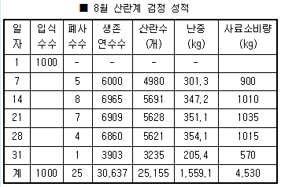
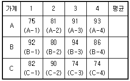
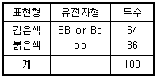
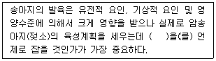

축산기사 (2013-09-28 기출문제)
1과목: 가축육종학
1. 한 개체가 우성동협접합체인지 이형접합체인지 구분이 되지 않을 때 이 개체와 검정교배하는 개체들의 유전자형은?
- aa
- AA
- Aa
- 어떤 형태도 가능
(정답률: 76%)

2. 전령 RNA(mRNA)에 내장된 유전정보를 받아서 단백질을 합성하는 세포내 소기관은?
- 리보솜
- 미토콘드리아
- 골지체
- 중심체
(정답률: 86%)
3. 반형매(半兄妹)의 관계가 있는 두 개체를 교배시켰을 때 근교계수는 얼마인가?
- 6.25%
- 12.5%.
- 25%
- 50%
(정답률: 79%)
4. 개량 대상형질에 대하여 일정한 값을 기준으로 그 이상의 개체는 선발하고 그 이하의 개체는 모두 도태시키는 방법은?
- 절단형선발(truncation selection)
- 가계선발(family selection)
- 간접선발(indirect selection)
- 당대검정에 의한 선발
(정답률: 77%)
5. 단위기간 당 유전적 개량량을 증대시키는 함수의 설명으로 틀린 것은?
- 세대간격을 최소화 한다.
- 유전적 변이를 최소화 한다.
- 선발강도를 최대화 한다.
- 신뢰도를 최대화 한다.
(정답률: 79%)
6. 한 유전자좌위(Locus)에 두 가지 형태의 대립 유전자 A와 a가 존재할 때 한 집단에서 A의 빈도가 0.5이고 이 집단이 유전적 평형 상태를 이루면 유전자형 Aa의 빈도는?
- 0.75
- 0.5
- 0.25
- 0.1
(정답률: 72%)
7. 산란계 농장의 검정성적이 다음 표와 같을 때 이 농장의 평균 난중은?

- 65.1g
- 61.9g
- 53.9g
- 46.9g
(정답률: 75%)
8. 양성교잡에서 3개 유전자 좌위의 대립인자간에 어떠한 간섭이 없이 각 대립인자의 유전자들이 독립적으로 유전되는 유전현상을 무엇이라 하는가?
- 분리의 법칙
- 독립의 법칙
- 대립의 법칙
- 우열의 법칙
(정답률: 85%)
9. 윤환교배방법과 종료교배방법의 장점을 이용할 수 있는 방법으로 일정비율의 암컷은 대체종빈축의 생산을 위해 윤환교배를 실시하고 나머지 일정비율의 교잡종 암컷은 종료종모축과 교배하여 실용축을 생산하도록 하는 교배 방법은?
- 3품종 종료교배
- 종료윤환교배
- 윤환교배
- 2품종 교배
(정답률: 72%)
10. 소의 무각은 유각에 대하여 우성이다. 무각(PP)인 소와 유각(pp)인 소를 교배하였을 때 그 F1의 표현형과 유전자형이 모두 옳게 표시된 것은?
- 무각(PP)
- 무각(Pp)
- 유각(Pp)
- 유각(pp)
(정답률: 87%)
11. 부모의 추정 육종가가 각각 100과 80일 때 이 둘에서 태어날 자손의 예상 육종가는?
- 180
- 100
- 90
- 80
(정답률: 88%)
12. 비육돈 생산에 적합한 3월 교배법은?
- [다산계A품종(♀) × 다산계 B품종(♂)](♀) × 육질좋은 C품종(♂)
- [다산계A품종(♀) × 육질좋은 B 품종(♂)](♀) × 육질좋은 C품종(♂)
- [육질좋은A품종(♀) × 다산계 B품종(♂)](♀) × 육질좋은 C품종(♂)
- [육질좋은A품종(♀) × 육질좋은 B품종(♂)](♀) × 육질좋은 C품종(♂)
(정답률: 52%)
13. 한우의 후대검정에 대한 설명으로 틀린 것은?
- 검정소 후대검정우의 선정기준은 후보씨수소 1두당 교배암소 40두 이상을 교배시켜 생산되고 유전자검사 결과 친자가 확인된 수송아지가 10두 이상이어야 한다.
- 후대검정우에 대한 검정기간은 예비검정과 본검정으로 구분하며, 예비검정은 생후 270~300일령에 시작하여 500일간 검정한다.
- 후대검정을 개시한 후보씨수소에 대하여는 보증씨 수소로 선발되기 이전까지는 냉동정액을 생산, 보관하여야 한다.
- 후대검정우의 체중 측정 시기는 개시시, 축군 평균 일령이 360일령, 540일령 및 종료시로 4회 측정한다.
(정답률: 56%)
14. 검정된 12마리 수퇘지 중 4마리만을 종돈으로 이용하고 나머지는 도태하고자 한다. 가계선발에 의하여 선발되는 개체의 번호는?

- A-3, A-4, B-1, B-3
- A-4, B-1, B-3, C-2
- B-1, B-2, B-3, B-4
- A-4, B-1, B-3, B-4
(정답률: 56%)
15. 산란계의 산란능력을 개량하기 위한 보다 효과적인 선발 방법은?
- 개체선발
- 가계선발
- 개체와 가계 결합선발
- 가계내선발
(정답률: 57%)
16. AABB와 aabb 교배시 가능한 F1 자손의 유전자형(genotype)은 총 몇 가지인가?
- 1가지
- 2가지
- 3가지
- 9가지
(정답률: 65%)
17. 한우의 어느 형질에 있어 상가적 유전분산은 0.6, 우성분산은 0.2, 상위성 분산은 0.1, 환경분산은 1.1 이었다. 이형질에 대한 좁은 의미의 유전력은?
- 0.1
- 0.2
- 0.3
- 0.4
(정답률: 67%)
18. 선발지수를 산출할 때 이용되는 통계량으로서 이용가치가 적은 것은?
- 각 형질간의 표현형공분산
- 각 형질간의 표현형 상관계수
- 각 형질의 상대적 경제가치
- 각 형질의 추정 생산 능력
(정답률: 48%)
19. 100마리의 앵거스(Angus) 소에 대한 모색을 조사한 결과가 아래와 같을 때, 붉은 색에 대한 유전자 빈도는? (단, 유전적 평형상태를 가정한다)

- 0.4
- 0.6
- 0.8
- 1.0
(정답률: 75%)
20. 체세포 분열의 중기에 나타나는 특징으로 가장 적합한 것은?
- 핵인(Nucleus)이 없어짐
- 염색체가 세포의 적도판에 배열
- 세포질의 분할
- 염색분체의 양극으로의 이동
(정답률: 72%)
2과목: 가축번식생리학
21. 유선의 발달에 대하여 바르게 설명한 것은?
- 유관과 유관분자가 유방내에서 형성되는 시기는 임신중기이다.
- 유관주위에 유선포의 발달이 왕성하게 일어나는 시기는 임신말기이다.
- 유선상피세포가 모여 유두를 형성하는 시기는 출생이후이다.
- 유선상피세포의 증식이 왕성하게 일어나는 시기는 성성숙기에서 임신직전까지이다.
(정답률: 52%)
22. 젖소의 정상적인 생리적 공태 기간은?
- 10~20일
- 40~60일
- 80~100일
- 120~140일
(정답률: 75%)
23. 융모막융모의 형태에 따라 산재성 태반을 가진 가축은?
- 돼지
- 면양
- 소
- 개
(정답률: 80%)
24. 돼지에서 수정시 다정자 침입을 방지하는 생리적 작용들만 묶은 것은?
- 투명대반응, 첨체반응, 난백차단
- 첨체반응, 난황막차단. 정자수의 제한
- 난백차단, 정자수의 제한, 첨체반응
- 정자수의 제한, 투명대 반응, 난황막 차단
(정답률: 62%)
25. 다음 중 분만이 개시될때 그 농도가 상대적으로 감소되는 호르몬은?
- PGF2α
- Progesterone
- Oxytocin
- Growth hormone
(정답률: 78%)
26. 다음 중 가축의 번식을 위한 생리적 작용이 유사한 호르몬끼리 연결된 것은?
- LH - hCG, FSH - Prolactin
- LH - hCG, FSH - PMSG
- LH - PMSG, FSH - Prolactin
- LH - PMSG, FSH - hCG
(정답률: 69%)
27. 가축의 발정을 동기화 하였을 때의 설명으로 틀린 것은?
- 개체별 발정의 관찰이 필요하다
- 배이식을 효과적으로 시술할 수 있다.
- 가축의 개량과 능력검정사업을 효과적으로 수행할 수 있다.
- 호르몬제의 처리에 따른 부작용이 나타날 위험성이 있다.
(정답률: 61%)
28. 다음 중 가축인공수정의 장점이 아닌 것은?
- 가축개량의 촉진
- 종모축의 유전력 조기판정
- 전염성 생식기병의 미연방지
- 수태율의 저하
(정답률: 81%)
29. 다음 중 수정란이 태아로 발달하는 것은?
- 영양막
- 내부세포괴(inner cell mass)
- 태막
- 투명대
(정답률: 79%)
30. 소에서 비외과적인 방법으로 수정란을 채취하는 시기는 배란 후 언제 실시하는 것이 바람직한가?
- 배란직후
- 배란 후 2일 이전
- 배란 후 3일 이전
- 배란 후 4일 이후
(정답률: 63%)
31. 수컷에서 부생식기관을 유지시키고 제2차 성징을 발현시킬 뿐만 아니라 정자의 형성에도 직접적으로 관여하는 호르몬은?
- LH
- hCG
- Testosterone
- Progesterone
(정답률: 76%)
32. 젖소의 유방에서 유즙이 생성 운반되는 경로가 바르게 연결된것은?
- 유선포-유선관-유선소엽-유선조-유두관
- 유선포-유선소엽-유선관-유선조-유두관
- 유선포-유선조-유선관-유선소엽-유두관
- 유선포-유선소엽-유선조-유선관-유두관
(정답률: 62%)
33. 소에서 가장 조기에 임신진단이 가능한 방법은?
- 직장검사법
- 유즙 중 호르몬 측정법
- 초음파 진단법
- 방사선 진단법
(정답률: 58%)
34. 포유가축의 교배적기를 결정하는 요인이 아닌 것은?
- 발정지속시산
- 정자의 성숙도
- 정자의 수송시간
- 정자의 수정능력 보유시간
(정답률: 56%)
35. 모축의 자궁에 착상되는 수정란의 단계는?
- 8세포기
- 16세포기
- 상실배
- 배반포
(정답률: 76%)
36. 정자가 생산되는 부위는?
- 세정관
- 정소상체
- 정소망
- 정관
(정답률: 60%)
37. 난자와 정자의 수정이 일어나는 장소는?
- 난관자궁 접합부
- 난관 누두부
- 난관 협부
- 난관 팽대부
(정답률: 73%)
38. 성숙한 포유가축의 자궁이 수행하는 생리적 기능으로 적당하지 않은 것은?
- 난자와 정자의 수송
- 황체기능의 조절
- 교미
- 임신유지 및 분만개시
(정답률: 68%)
39. 성숙한 암컷의 포유가축에서 성선자극호르몬의 결핍, 난소이상 및 황체퇴행 장해 등에 의해서 난포의 발육이 되지 않는 경우 어떤 증상이 나타나는가?
- 난소낭종
- 위임신
- 사모광증
- 무발정
(정답률: 62%)
40. 돼지에 있어서 기구를 사용하여 임신을 가장 쉽게 진단할 수 있는 방법은?
- 초음파 진단법
- 호르몬 분석법
- 질생체조직 검사법
- 직장 촉진법
(정답률: 79%)
3과목: 가축사양학
41. 우유 생산을 위한 영양소 공급에 있어서 이상적인 조사료 : 농후사료 급여비율은?
- 90 : 10
- 60 : 40
- 30 : 70
- 20 : 80
(정답률: 72%)
42. 다음 [보기]의 설명 중 ( )안에 맞는 것은?

- 초산월령
- 최고비유기
- 건유기
- 사료증급기
(정답률: 69%)
43. 다음 중 활성흡수에 의해 흡수되는 영양소는?
- 프락토스(fructose)
- 만노스(mannose)
- 포도당(glucose)
- 리보스(ribose)
(정답률: 69%)
44. 갑상선 종양을 일으 킬 수 있는 물질(goitrogenic)을 갖고 있는 사료는?
- 대두박
- 호마박
- 채종박
- 임자박
(정답률: 70%)
45. 산란계의 경우 난황이 배란되어 난관을 통과하여 산란하기까지의 평균 소요시간은?
- 12~14시간
- 15~20시간
- 24~25시간
- 30~31시간
(정답률: 60%)
46. 산란계 농장의 경영에서 손익분기점 분석시 산란일량 파악과 관계가 없는 것은?
- 1일 1수당 사료섭취량
- 생산비중 성계사료비의 비율
- 계란과 사료의 가격비율
- 계사 및 시설의 감가상각비
(정답률: 67%)
47. 산란계 사양에서 사료내 단백질 함량을 증가시켜 주지 않아도 될 경우는?
- 다산시(多産時)
- 체중이 표준치 보다 적을 때
- 식용이 부진할 때
- 기온이 적정 사육온도 보다 낮았을 때
(정답률: 54%)
48. 반추위내에서 생성되는 휘발성 지방산 중 유지방 합성에 가장 많은 영향을 미치는 것은?
- 구연산(Citric acid)
- 초산(Acetic acid)
- 프로피온산(Propionic acid)
- 젖산(Lactic acid)
(정답률: 71%)
49. 우리나라 축산에서 사용하지 않는 사료의 에너지 단위는?
- TDN
- kcal
- 덤(Therm)
- Mcal
(정답률: 82%)
50. NRC 사양표준(1994)이 규정한 갈색 산란계 단백질 요구량은 약 얼마인가?
- 4%
- 11%
- 13%
- 16%
(정답률: 48%)
51. 닭의 에너지 요구량 표현 기호로 가장 널리 쓰이는 것은?
- DE
- ME
- NE
- TDN
(정답률: 60%)
52. 산란용 닭의 성성숙 시기와 가장 관계 깊은 것은?
- 산란율 및 난중
- 폐사율
- 사료 섭취량
- 질병
(정답률: 74%)
53. 육계체중 1~2kg 사이에 사료요구율이 2.2라면 체중 1kg인 육계 100마리가 체중 2kg까지 자라는데 소요되는 사료는 몇 kg인가?
- 100kg
- 150kg
- 200kg
- 220kg
(정답률: 80%)
54. 배합사료의 저장시 사료가치나 풍미 저하를 가장 적게 할 수 있는 수분함량은?
- 11~13%
- 20~22%
- 28~30%
- 31~33%
(정답률: 63%)
55. 가축사료에서 탄수화물의 가장 중요한 영양적 기능은?
- 에너지를 공급한다.
- 섬유소를 공급한다.
- 포도당을 공급한다.
- 사료에 부피를 제공한다.
(정답률: 77%)
56. 포도당 1분자가 체내에서 완전히 산화될 때 ATP 생성량은 얼마인가?
- 28 ATP
- 38 ATP
- 48 ATP
- 58 ATP
(정답률: 76%)
57. 소화에 대한 각종 영양소의 최종 생산물을 나타낸 것 중 옳지 못한 것은?
- 전분(starch) → 포도당(Glucose)
- 유당(lactose) → 포도당 + Maltose
- Cellulose → 유기산
- 지방(Lipid) → 지방산 +Glycerol
(정답률: 60%)
58. 단위동물에서 사료단백질의 소화율에 영향을 미치는 요인이 아닌 것은?
- 동물의 나이
- 단백질의 섭취량
- 소화기관의 길이
- 대두박의 trypsin inhibitor
(정답률: 57%)
59. 송아지에 있어서 가장 적합한 초유 급여 시기는?
- 출산직후 12시간 이내
- 출산후 13~24시간
- 출산후 1~2일
- 출산후 만 48시간 이후
(정답률: 84%)
60. 체내 흡수된 영양소는 에너지를 생성하는데 이때 소비된 O2와 생성된 CO2양과의 비율을 호흡상이라 하는데, 일반적으로 탄수화물과 지방의 호흡상은 각각 약 얼마인가?
- 1.0과 1.2
- 1.0과 1.0
- 1.0과 0.7
- 1.0과 0.9
(정답률: 60%)
4과목: 사료작물학 및 초지학
61. 건초와 비교할 때 사일리지의 유리한 점이 아닌 것은?
- 다즙질 사료를 공급할 수 있다.
- 제조시 일기의 영향을 덜 받는다.
- 동일한 면적에 많은 양을 저장할 수 있다.
- 비타민 D의 공급력이 높다.
(정답률: 76%)
62. 다음 중 목초가 자라는데 필요한 미량원소에 해당되지 않는것은?
- Cu
- Mo
- Mn
- Mg
(정답률: 41%)
63. 사일리지의 2차 발효(호기적변화)에 관한 설명으로 옳은 것은?
- 사일리지를 급여하기 위해 개봉 후 혐기성 조건이 깨지면서 호기성 세균에 의해 각종 성분이 분해 되는 것
- 사일리지 조제 과정 중 식물체의 호흡등에 의해 협기조건이 조성되어 유산균의 활동이 가장 활발해지는 단계
- 충진 직후 효모, 곰팡이 등 호기성 세균에 의해 수용성 당분이 분해되는 것
- 잉여 수분이 배출되어 고수분 상태에서 발생하는 변패
(정답률: 50%)
64. 알팔파의 사료가치 중 틀린 것은?
- 가축의 기호성이 좋다
- Ca의 함량이 낮다
- 소화율이 높다
- 단백질의 공급량이 많다.
(정답률: 74%)
65. 생초의 자연 건조율을 증진하기 위하여 압착을 가하는 기계로 포장에서의 건조시간을 단축시켜 건초의 손실을 최소화 할 수 있는 작업 기계는?
- 모우어
- 레이크
- 베일러
- 컨디셔너
(정답률: 69%)
66. 옥수수 사일리지를 평가하기 위하여 사일로를 개봉하고 깊숙한 곳에서 시료를 채취하여 손으로 꽉 쥐었더니 즙액이 한 두 방울 떨어지고 손에는 톡 쏘는 듯한 산취가 오래 동안 가시지 않았다. 이 사일리지에 대한 설명으로 가장 올바른 것은?
- 너무 늦게 수확하여 재료의 건물률이 너무 높고 아마도 곰팡이나 효모가 많이 있을 것이다.
- 수분함량에 비하여 재료의 절단 길이가 길고 곡분과 같은 첨가제를 과도하게 이용하였을 것이다.
- 조기수확으로 수분함량이 너무 높고 과발효 또는 젖산 발효보다 낙산발효가 더 많이 일어났을 것이다.
- 충분한 예건과 유산균 첨가제를 이용하였기 때문에 삼출액에 의한 손실은 거의 없을 것이다.
(정답률: 70%)
67. 임간초지 조성은 친환경적 방법으로 우리나라와 같이 산지나 경사지가 많은 지형에 유리한데 다음 설명하는 임간 초지의 설명으로 옳은 것은?
- 우리나라에서 재배되고 있는 북방형 목초의 광포화점은 2500~300Lux 이므로 임간 초지조성에 따른 목초생육에 지장이 없다.
- 임간초지에서는 수목에 의하여 광선이 차단되므로 토양수분의 증발이 억제되어 목초정착에 유리하다.
- 임간초지조성은 경운을 하지 않으므로 화입(火入)을 통하여 선점식생을 제거한다.
- 임간초지는 목초는 물론 기존의 야초류(초본식물) 등이 같이 성장하고 있으므로 보파가 필요없다.
(정답률: 56%)
68. 어떤 방목지(10a)에서 4500kg의 생초를 생산할 때 이방목지의 방목일(放牧日, cow-day)수는?
- 25 ~ 45일
- 50 ~ 75일
- 80 ~ 115일
- 120 ~ 155일
(정답률: 44%)
69. 다음 사료작물 중 내한성(耐寒性)이 가장 강한 초종만으로 구성된 것은?
- 크림손 클로버, 스위트 클로버
- 죤슨 그래스, 화이트 클로버
- 버뮤다 그래스, 레드 클로버
- 티머시, 레드클로버
(정답률: 68%)
70. 다음의 사일리지 첨가제와 용도를 잘못 연결한 것은?
- 영양소 첨가제 : 곡류, 당밀
- 수분조절제 : 밀기울, 비트펄프, 볏짚
- 단백질 첨가제 : 요소, 암모니아
- 발효촉진제 : 개미산, 프로피온산
(정답률: 56%)
71. 비출수형(영양생장형)수수류가 재배되는 가장 큰 이유는?
- 이용기간이 길어 작부체계 설정과 농가 인력 배분상 유리하다.
- 수확시기가 명확하여 이용이 편리하다.
- 양분수량 특히 탄수화물의 함량이 증가한다.
- 2회 예취하여 곡실과 경엽의 수량을 증가시킬 수 있다.
(정답률: 42%)
72. 다음 중 최근 농업여건이 변화하여 사료작물로 많이 이용되는 것은?
- 진주조
- 청보리
- 개밀
- 소리쟁이
(정답률: 76%)
73. 목초나 사료작물 등을 식물학적으로 분류하여 이용하고 있는 학명에 대한 설명으로 옳지 않은 것은?
- 모든 과학적 지식을 동원하여 결정되기 때문에 영구불변 하다.
- 속명과 종명으로 구성되어 이명법이라고도 한다.
- 다른 단어와 구별하기 위하여 속명과 종명은 이탤릭체로 쓴다.
- 전 세계가 공통으로 사용하며 속명의 첫 글자는 대문자로, 종명은 소문자로 쓴다.
(정답률: 70%)
74. 초지조성을 위하여 대상지의 토양을 조사한 결과, 토양의 pH가 5.0, 유효인산함량이 23ppm이었다. 이 결과를 기초로 한 초지조성 대상지의 토양개량에 대한 설명으로 가장 올바른 것은?
- 유효인산함량은 적정함으로 인산질 비료의 시비가 필요없다.
- 유효태 인산함량이 높으므로 목초의 정착에 도움을 준다.
- 적정 pH에 해당함으로 두과목초의 성장에 도움을 준다.
- 농용석회와 같은 석회질 자재를 살포하여 토양산도를 교정할 필요가 있다.
(정답률: 65%)
75. 파종방식 중 불경운초지의 조성에 쓰이는 것은?
- 점뿌림
- 겉뿌림
- 흩어뿌림
- 줄뿌림
(정답률: 65%)
76. 수정을 주로 트리핑(Tripping) 현상에 의존하는 것은?
- 톨 페스큐
- 매듭풀
- 알팔파
- 오차드 그래스
(정답률: 69%)
77. 볏짚을 소의 사료로 쓰려 한다. 기호성과 소화율을 가장 높이려면 어떻게 하는 것이 좋은가?
- 일반계 볏짚을 사용하여 급여한다.
- 물에 적셨다가 급여한다.
- 요소에 침지처리 하였다가 급여한다.
- 암모니아가스(가성소다)에 처리 후 급여한다.
(정답률: 51%)
78. 수평사일로라고도 하며, 축사에서 가까운 평지나 경사면에 흙을 파고 바닥, 뒷면 및 양족 벽면 콘크리트로 만들어 저장하는 우리나라에서 가장 많이 이용되는 사일로의 형태는?
- 탑형 사일로
- 스택 사일로
- 트렌치 사일로
- 기밀 사일로
(정답률: 53%)
79. 어떤 목초의 영양소 함량 중 가소화 조단밸직 10%, 가소화 조섬유 12%, 가용무질소물 26% 및 가소화 조지방 함량이 1% 일 때 이 목초의 가소화 영양소 총량(TDN)은 몇 %인가?
- 54.25
- 48.25
- 50.25
- 52.25
(정답률: 71%)
80. 다음 중 불경운 초지조성방법의 장점으로 틀린 것은?
- 경사가 심하고 장애물이 많아서 기계를 사용할 수 없는 곳에도 조성이 가능하다.
- 나무나 잡관목 등 장애물만을 제거하고 조성하기 때문에 작업이 간편하고 비용이 적게 든다.
- 땅을 갈지 않고 조성하기 때문에 토양유실의 위험이 적다.
- 경운을 하지 않기 때문에 빠른 시일 내에 생산성 높은 초지를 만들 수 있다.
(정답률: 68%)
5과목: 축산경영학 및 축산물가공학
81. 다른 축산물의 생산량을 증감시키지 않고 한 가지 축산물의 생산량을 증가시킬 수 있다면 이 두 생산물간의 관계를 무엇이라고 하는가?
- 보완관계
- 경제관계
- 결합관계
- 보합관계
(정답률: 48%)
82. 최근 양돈업은 공해를 유발하는 산업으로 지목받고 있다. 이에 대한 해결방안으로 적합하지 않은 것은?
- 계열화 사업으로 대처
- 폐수의 퇴비화를 위한 투자
- 폐수처리 시설자금의 장기저리 지원
- 양돈단지화 조성을 동한 공동폐수처리시설 지원
(정답률: 74%)
83. 고정자본재의 감가상각비 중 기술적 감가의 원인니 되는 것은?
- 진부화에 의한 감가
- 부적응에 의한 감가
- 불충분에 의한 감가
- 사용소모에 의한 감가
(정답률: 50%)
84. 부분시산(部分試算)법을 이용하여 어떤 특정 변수가 수익에 어더한 영향을 끼치는가를 파악하려 할 때 검토하여야 할 사항이 아닌 것은?
- 감소되는 수입
- 새로운 비용과 추가비용
- 생산기술 또는 기술계수
- 새로운 수입 도는 추가수입
(정답률: 55%)
85. 산란계 A농가의 조수입이 5천만원, 감가상각비가 5백만원, 차입금이자가 1백만원, 경영비가 2천 5백만원, 자가 노력비가 3백만원, 자본이자가 7백만원이라고 할 때 이 농가의 순수익은 얼마인가?
- 5백만원
- 1천만원
- 1천 5백만원
- 2천만원
(정답률: 50%)
86. 금년에 트렉터 1대를 2천만원을 주고 구입하였다. 이 트렉터의 내용년수가 10년이고 잔존가격이 2백만원일 경우 정액법으로 계산한 년간 감가상각액은 얼마인가?
- 150만원
- 180만원
- 200만원
- 220만원
(정답률: 59%)
87. 축산경영의 경제적 특징이 아닌 것은?
- 자금회전의 원활화
- 생산물의 저장성 증진
- 토지와 노동력 이용도 제고
- 농산물의 이용 및 생산 증진
(정답률: 51%)
88. 생산함수에서 평균생산물과 한계생산물의 관계를 바르게 설명한 것은?
- 평균생산물이 증가하면 한계생산물은 감소한다.
- 한계생산물이 평균생산물 보다 클 경우 평균 생산물은 증가한다.
- 한계생산물이 평균생산물 보다 작을 경우 한계 생산물은 증가한다.
- 한계생산물과 평균생산물이 동일할 경우 평균 생산물 은 최소가 된다.
(정답률: 52%)
89. 다음 중 축산경영의 목표 내지는 합리화 방안으로 볼 수 없는 것은?
- 농외소득의 최대화
- 자가노동 보수의 최대화
- 자기자본 이자의 최대화
- 경영관리에 대한 이윤의 최대화
(정답률: 61%)
90. 한우 비육경영에서 가장 큰 비용 항목은?(오류 신고가 접수된 문제입니다. 반드시 정답과 해설을 확인하시기 바랍니다.)
- 사료비
- 노동비
- 가축비
- 감가상각비
(정답률: 37%)
91. Methylene blue 환원 시험법의 확인 내용은?
- 단백질 함량
- 유지방 함량
- 미생물량 추정
- 무기질량 추정
(정답률: 60%)
92. 육제품 제조 시 첨가되는 소금의 역할이 아닌 것은?
- 결착력 증가
- 향미증진
- 저장성 증진
- 지방산화 억제
(정답률: 45%)
93. 연속 아이스크림 냉동기의 장점이 아닌 것은?
- 얼음결정이 작기에 아이스크림 질감이 부드럽다.
- 경화 후 아이스크림 부피의 감소가 가능하다.
- 신속냉동으로 유당 결정이 작아 snady(모래조직) 현상이 최소화 된다.
- 단위 제품 간 차이가 적고 숙성시간이 감소된다.
(정답률: 65%)
94. 육제품 제조과정에서 염지를 실시할 때 아질산염의 첨가로 억제되는 식중독균은?
- Clostridium botulinum
- Salmonella spp.
- Pseudomonas aeruginosa
- Listeria monocytogenes
(정답률: 50%)
95. 치즈 제조 시 단백질 응유효에 의해 분해되는 단백질은?
- α -casein
- k -casein
- β -casein
- β - lactoglobulin
(정답률: 61%)
96. 돼지고기의 육색이 창백하고, 육조직이 무르고 연약하여, 육즙이 다량으로 삼출되어 이상육으로 분류되는 돈육은?
- 황지(黃脂)돈육
- 연지(軟脂)돈육
- PSE돈육
- DFD돈육
(정답률: 74%)
97. 유가공품의 고온단시간 살균법 조건은?
- 63~65℃, 30분
- 72 ~75℃, 15~20초
- 85 ~90℃, 50~60초
- 128 ~138℃, 1~3초
(정답률: 63%)
98. 육제품 제조 시 원료육에 요구되는 기능적 특성이 아닌 것은?
- 보수성
- 결착력
- 유화력
- 수분활성도
(정답률: 53%)
99. 다음 육제품 제조기계 중 유화기능이 있는 것은?
- mixer
- grinder
- stuffer
- silent cutter
(정답률: 53%)
100. 아질산염의 첨가로 아민류와 반응하여 생성되는 발암의심 물질은?
- Nitrosyl hemochrome
- Nitroso-myochromogen
- Nitrosamine
- Nitrosomet myglobin
(정답률: 59%)